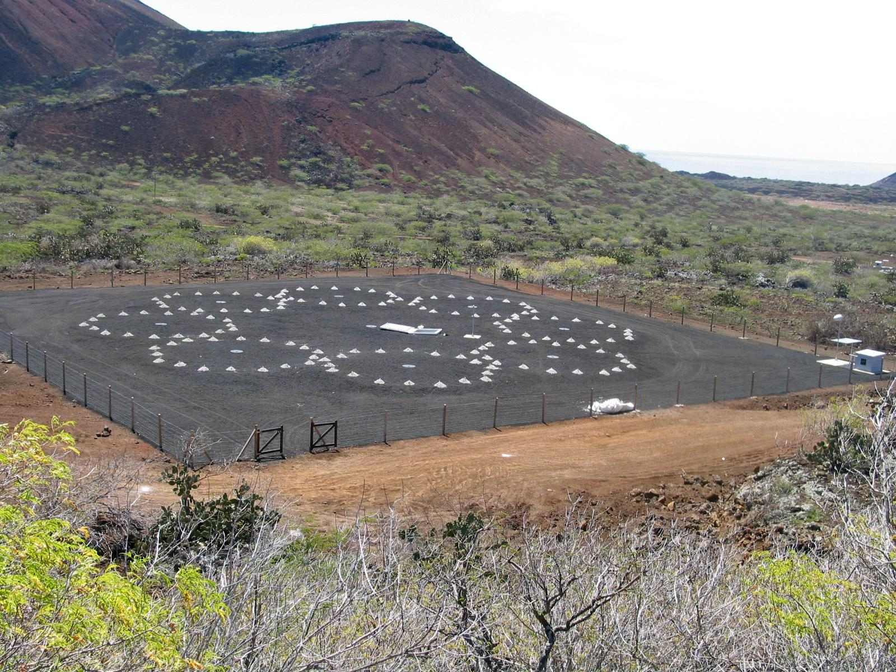
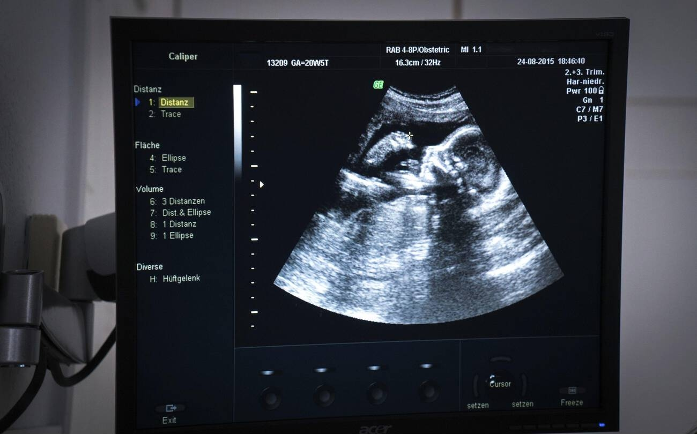
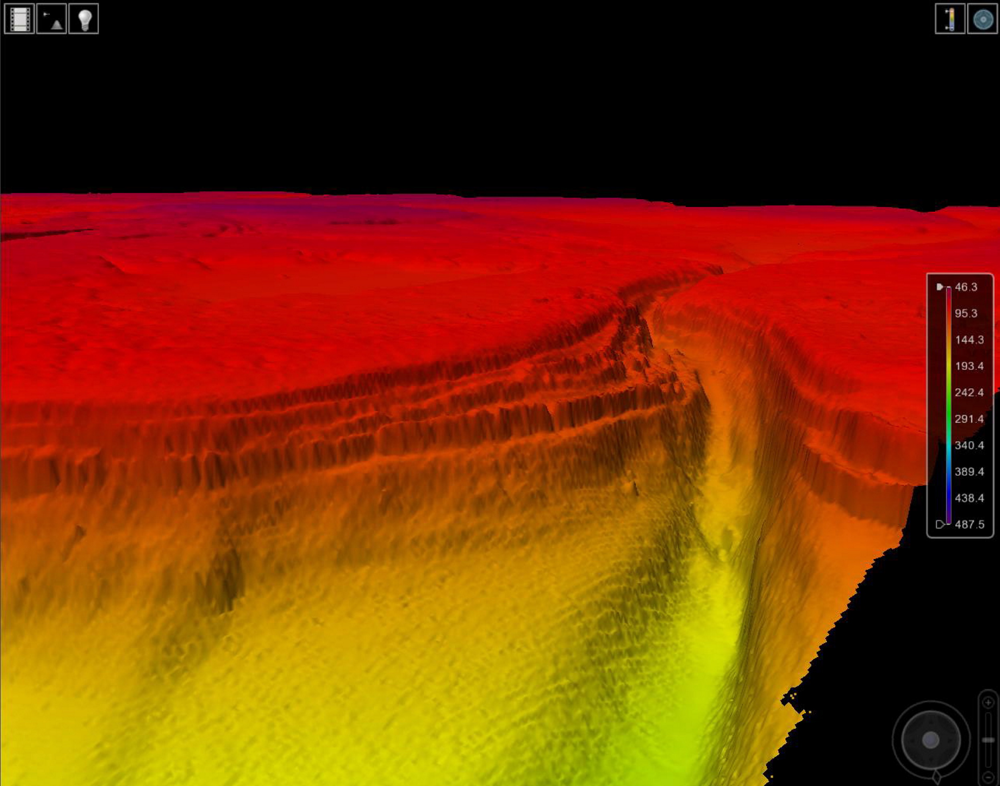

先认清：次声波、可听声与超声波
次声波：低于 20 Hz
每秒振动少于 20 次，以人耳常用可听范围为参照命名。它仍是机械波，需要介质传播；“听不见”不等于“不存在”。低频不是低声强，次声波也不等于危害或地震预兆。
超声波：高于 20,000 Hz
每秒振动超过两万次。这里的“超”指频率超出人耳常用范围，不是传播得比普通声音更快。在同一介质、声速近似相同时，λ = v / f，频率越高，波长越短。
20 Hz—20 kHz 是教学中常用的人耳范围，真实听阈随频率、年龄、个体和声强变化。彩色条带是范围示意，不是“条带内任何弱声都能听到”。数轴采用对数刻度：相同距离表示相同的频率倍数，不是相同的赫兹差。
动物听力：看清“谁、什么条件、什么证据”
亚洲象：Heffner 与 Heffner（1982）对一头亚洲象的行为测听得到低频听觉证据。本页条带用约 16—12,000 Hz 的实验示例；两端需要较强声音，不能视为所有大象统一的听力边界，更不能用叫声频率替代听力测量。原始研究
虎鲸：Branstetter 等（2017）的综合行为听力图给出约 600 Hz—114 kHz 的截止范围（论文采用阈值超过 100 dB re 1 μPa 的判据）；水下实验、判据与陆生动物不同。虎鲸属于齿鲸，本页用它作鲸类代表，不能推广成蓝鲸、座头鲸等所有鲸的范围。原始研究摘要
声波怎样帮助我们获取信息、传递能量？
下面的应用各有传感器、介质与频段要求；电脑的纯音试听只是课堂类比，不能完成这些测量。
次声波的应用 低于 20 Hz
① 次声监测：识别远处爆炸

点击查看高清大图 ↗阿森松岛 IS50 次声监测站阵列实景。The Official CTBTO Photostream / CTBTO Preparatory Commission · 图片来源 · CC BY 2.0原理：微气压计记录声波引起的微小大气压变化，多台传感器组成阵列，比较信号到达时间与方向。
应用：CTBTO 用次声网络辅助发现、分析大气核爆炸等事件，并与地震、水声等观测互相核验。
边界：低频可远距离传播，但风、温度结构和背景噪声影响接收；单个信号不能自动证明发生了核爆炸。
CTBTO · 监测原理② 次声观测：火山与流星
点击查看高清大图 ↗1980 年圣海伦火山喷发实景；照片展示声源事件，次声波本身不可见。Austin Post / USGS · 图片来源 · 公共领域（美国）原理：喷发、流星空爆等过程激发大气声波；通过远处站点记录，辅助判断事件发生时间、位置与活动情况。
实例：2013 年车里雅宾斯克流星事件被次声站记录。火山次声也可为喷发监测和航空火山灰风险评估提供信息。
边界：这是观测与监测，不等于“听到次声就能提前准确预报地震或火山”。
CTBTO · 流星记录 · 民用与科学应用超声波的应用 高于 20,000 Hz
③ 超声成像：观察身体内部

点击查看高清大图 ↗胎儿二维 B 超影像实拍：灰度图像来自声波回波，并非可见光拍到胎儿。Goleisureintl · 图片来源 · CC BY 4.0原理：探头发出声波，组织界面返回回波；利用回波强弱和返回时间形成图像。耦合凝胶帮助声波从探头传入身体。
应用：观察腹部器官、胎儿、心脏；多普勒超声利用运动引起的频率变化获取血流信息。
边界：不用 X 射线，但仍向组织传递能量；应由专业人员按医疗需要使用，不能理解成任意强度、任意时长都无影响。
FDA · 超声成像拓展：回声测距（不限于超声波）
⑥ 回声测距与声呐：用时间算距离

点击查看高清大图 ↗多波束回声测深重建的红海海底峡谷；颜色为数据可视化，并非海底实景照片。Photo: Royal Navy/MOD · 图片来源 · OGL v1.0原理：发出脉冲再接收回波，若声速为 v、往返时间为 t，距离 d = vt / 2；除以 2 是因为声音往返各走一次。
应用：主动声呐探测水下目标、绘制海底地形。被动声呐只接收目标声音，不主动发射脉冲。
边界：声呐不全是超声；不同设备使用不同频段。实际测距需考虑介质声速和传播路径，不能一律代入空气声速。
NOAA · 声呐 · 回声测深资料核查：2026-09-26。每项保留原始研究或机构来源；动物条带是有条件的教学示意，不用于跨物种灵敏度排名。回声定位互动实验与人耳 3D 结构另行开发。